본편 33초 (0:30 무렵 실제 문이 열림) + 문이 열린 뒤 대기 화면 20초 반복
16:9 · 예식장 스크린 상영용 · 신랑 얼굴은 끝까지 보이지 않음
음악(참고): 이원석 「큐사인」 — 0:30에 음악이 터지는 지점에 맞춰 문이 열림
이미지는 분위기 확인용 시안이며, 실제 영상에서는 움직임과 세부가 달라질 수 있습니다.
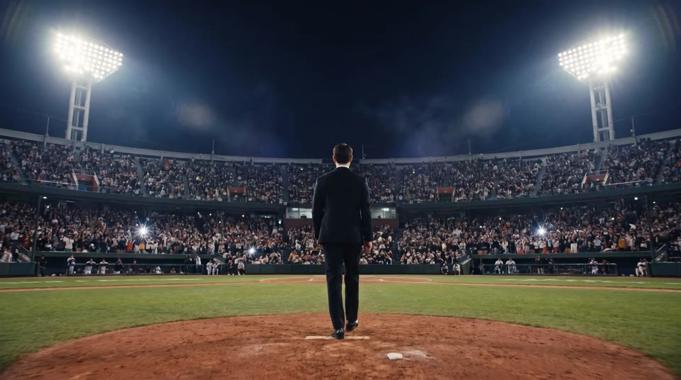
화면 마운드에서 출발하는 신랑의 뒷모습 와이드. 낮은 앵글·좌우 대칭(조명탑이 양옆), 관중석 플래시. 카메라는 거의 고정, 아주 느리게 다가감
움직임 카메라가 뒤에서 아주 천천히 다가가고, 신랑은 마운드를 걸어 멀어짐. 관중석 플래시가 반짝이고 조명이 번짐
소리 음악 도입(잔잔) + 관중 함성 앰비언스
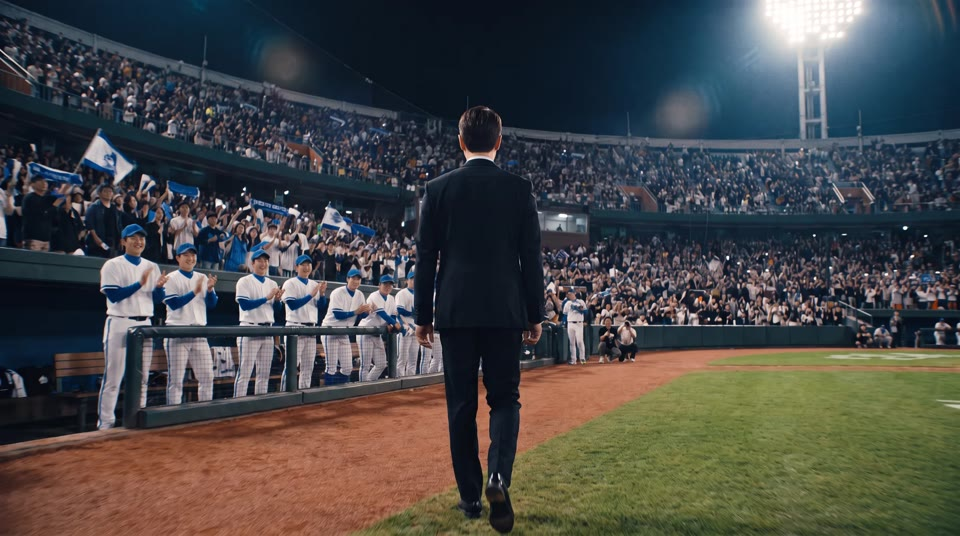
화면 컷이 바뀌면 이미 3루 쪽 더그아웃 근처. 파울라인을 따라 비스듬히 걸어가는 뒷모습을 등 뒤 어깨 높이에서 핸드헬드로 따라감. 앞쪽 더그아웃 난간의 선수들이 그를 향해 돌아섬
움직임 등 뒤 어깨 높이에서 핸드헬드로 따라감. 파울라인을 따라 더그아웃 쪽으로 걷고, 난간의 선수들이 박수를 치기 시작
소리 관중 함성 + 발소리
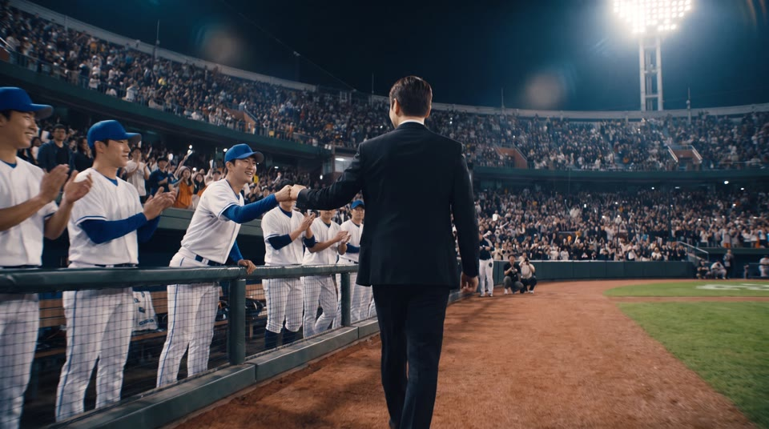
화면 더그아웃 난간을 따라 걸으며, 고개는 정면을 둔 채 옆 선수와 가볍게 주먹 인사하는 뒷모습. 등 뒤 핸드헬드 팔로잉, 나머지 선수들은 박수
움직임 걸으면서 고개는 정면을 둔 채 손을 뻗어 선수와 가볍게 주먹 인사, 그대로 계속 걸어감
소리 0:08 음악 빌드업 시작 + 선수들 환호·박수
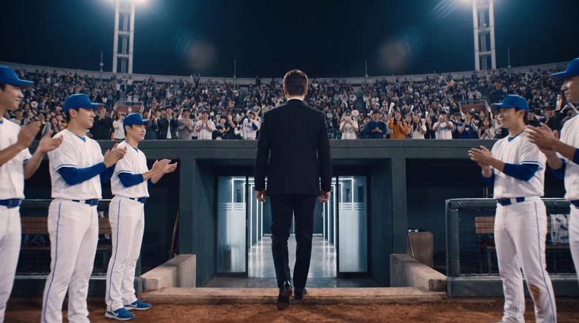
화면 더그아웃 계단을 내려가, 더그아웃 안쪽 벽의 복도 입구로 들어가는 뒷모습. 뒤에서 경기장 빛이 역광으로 비추고, 앞쪽 복도에서 흰 LED 빛이 새어 나옴
움직임 뒤에서 따라가며 더그아웃으로 내려서고, 양옆 선수들의 박수 속에 복도 입구로 걸어 들어감
소리 함성이 먹먹하게 멀어짐
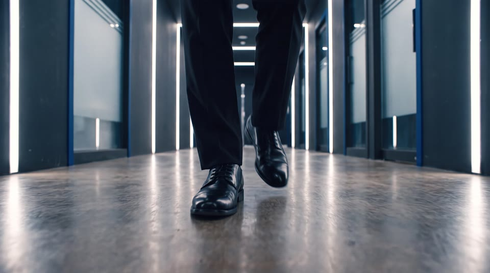
화면 걷는 구두 발끝 클로즈업. 바닥 가까이 낮은 앵글로 트래킹
움직임 카메라가 발 앞에서 뒤로 물러나며 걷는 구두를 따라감. 바닥의 LED 반사가 흘러감
소리 구두 발소리 또렷하게
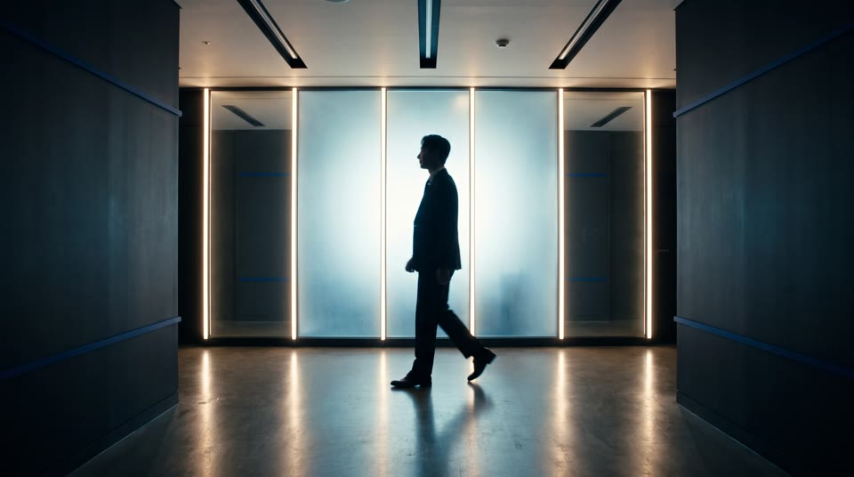
화면 복도 측면 풀샷, 밝게 빛나는 벽을 배경으로 한 검은 실루엣(얼굴 디테일 없음). 카메라는 고정, 인물이 왼쪽에서 프레임 인 → 오른쪽으로 프레임 아웃. 벽에 구단 엠블럼·트로피 진열장
움직임 카메라 고정. 실루엣이 화면 왼쪽에서 오른쪽으로 걸어 나가고, 빈 복도를 0.5초 남김
소리 빌드업
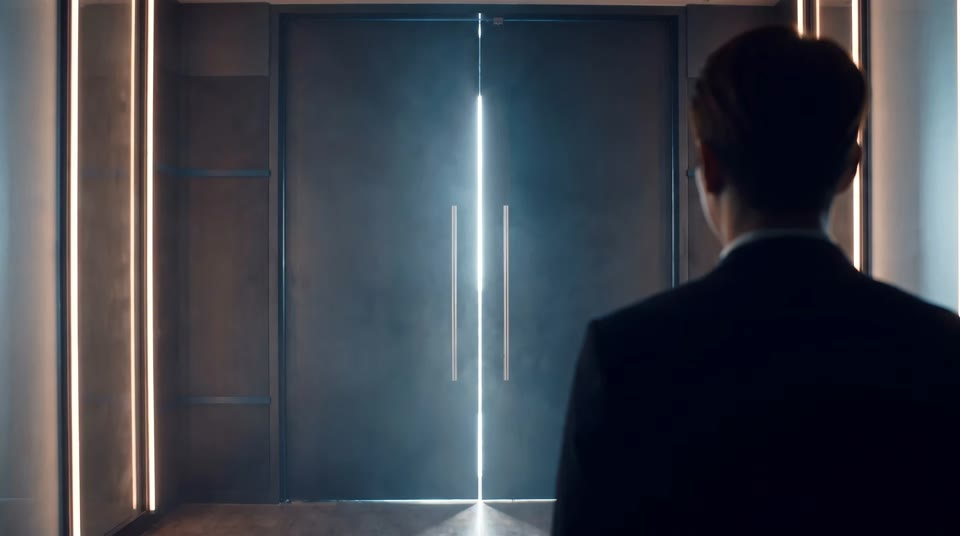
화면 어깨 너머 컷: 화면 오른쪽 앞에 신랑의 뒤통수·어깨가 크게, 어둡고 흐리게 걸림. 화면 가운데에는 닫힌 검정 금속 문의 이음새로 흰 빛줄기가 또렷하게 새어 나옴 (문을 마주한 순간)
움직임 어깨 너머로 닫힌 문을 향해 아주 천천히 다가감. 문틈의 빛이 은은하게 일렁이고 안개가 흐름
소리 빌드업 고조
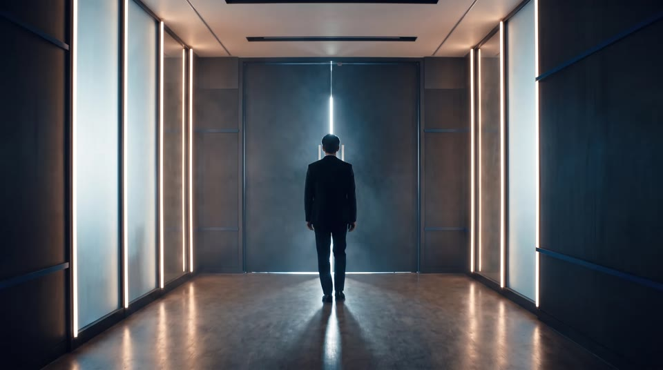
화면 복도 정면 대칭 와이드. 화면 정중앙에 작은 검은 실루엣으로 걸어가는 신랑, 복도 끝 한가운데 검정 금속 문(문틈·문 아래로 희미한 흰 빛이 역광)
움직임 고정된 대칭 와이드. 화면 정중앙의 실루엣이 천천히 문을 향해 걸어감 (짧게 2~3초)
소리 빌드업
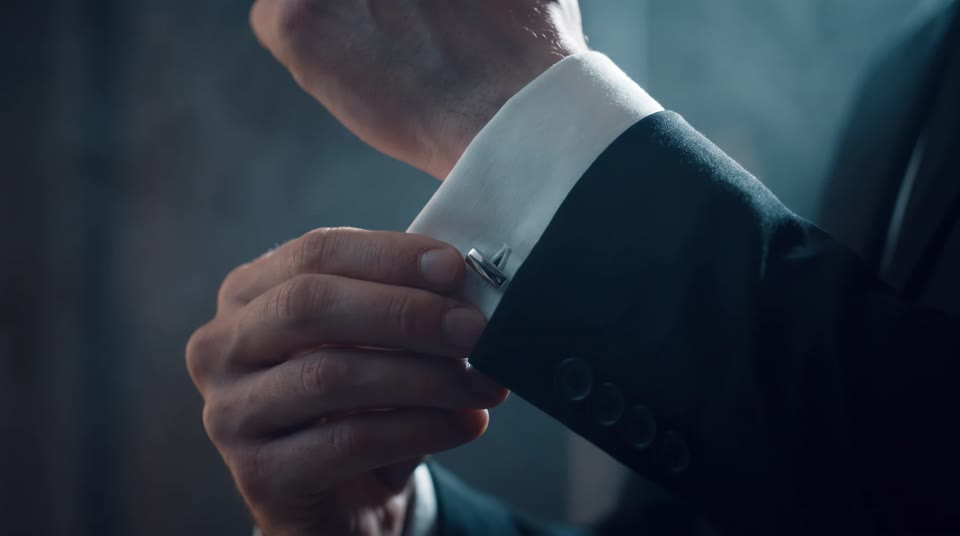
화면 커프스 단추를 만지는 손 익스트림 클로즈업
움직임 손가락이 커프스 단추를 돌려 매만짐. 금속에 빛이 반짝
소리 빌드업 고조
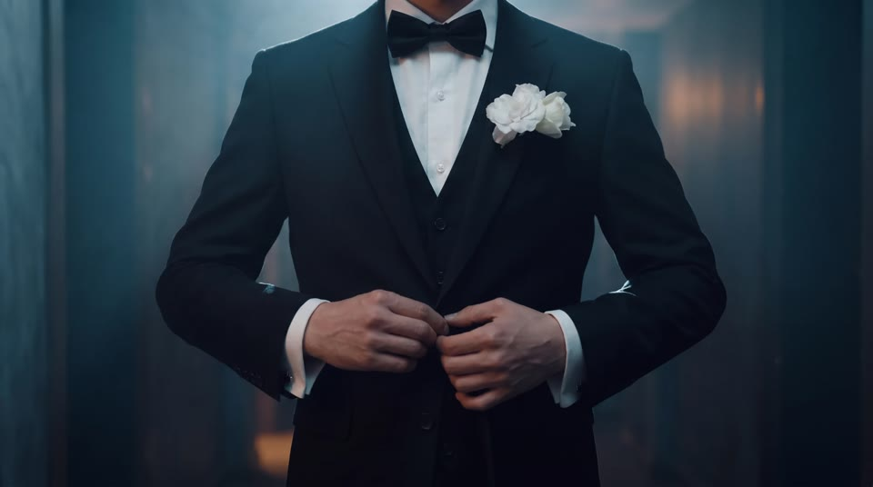
화면 재킷 단추를 잠그는 손 클로즈업 (가슴~허리, 얼굴 X)
움직임 두 손이 재킷 단추를 잠그고 앞섶을 가볍게 정리. 카메라는 거의 고정, 턱 아래로만
소리 빌드업 고조
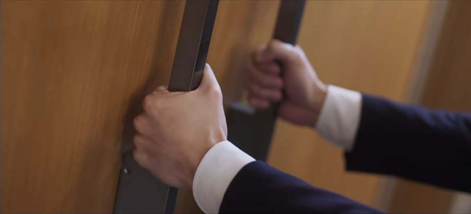
화면 살짝 기울어진(더치앵글) 클로즈업: 두 손이 검정 금속 문의 세로 손잡이 두 개를 힘차게 부여잡음. 흰 셔츠 소맷부리와 검은 정장 소매, 힘이 들어간 손마디
움직임 두 손이 손잡이를 더 꽉 움켜쥐고, 손마디에 힘이 들어가며 문을 열 준비. 문틈 빛이 조금 밝아짐
소리 빌드업 최고조
※ 임시 이미지(참고 사진) — 실제 영상은 검정 금속 문으로 제작
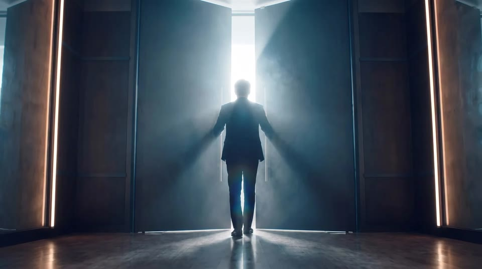
화면 문이 살짝 열리며 문틈으로 새하얀 빛이 새어 나옴. 로우앵글 뒷모습 실루엣
움직임 낮은 앵글. 두 손으로 문을 밀자 문이 열리기 시작하고, 벌어지는 틈으로 흰 빛이 터져 나와 안개를 가름
소리 문 여는 무거운 소리, 0:29.5 음악 끊김
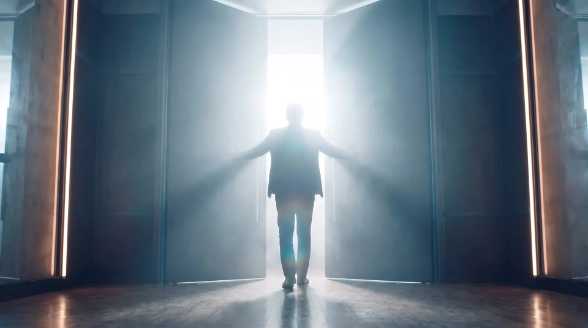
화면 양팔로 문을 활짝 밀어 열고 빛 속으로 들어감 → 빛이 화면 전체를 덮으며 화이트 디졸브
움직임 두 팔을 활짝 벌려 문을 끝까지 열고, 쏟아지는 흰 빛이 화면을 덮으며 실루엣이 하얗게 녹아듦
소리 0:30 음악 터짐
화면 풀 화이트 홀드
움직임 생성 불필요 — 편집에서 하얀 화면 1초
소리 음악 계속
화면 화이트가 걷히며 밤 야구장 상공이 드러남. 첫 불꽃이 양옆에서 터짐 (1회 재생)
움직임 하늘에서 아주 천천히 앞으로 흐르는 드론 시점. 좌우에서 첫 불꽃이 터지고 관중이 응원 수건을 흔듦 (편집에서 하얀 화면 → 디졸브)
소리 음악 계속 + 불꽃 소리
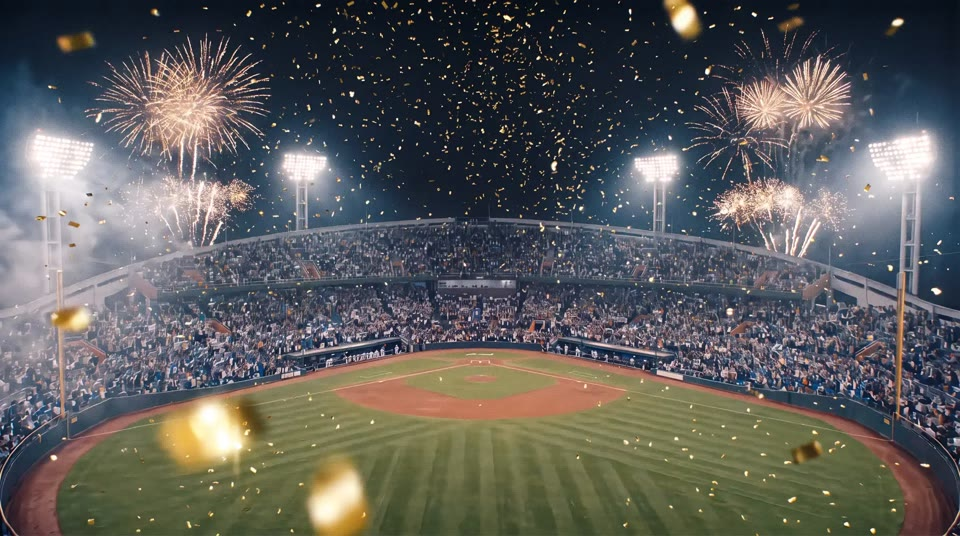
화면 대기 화면(20초 루프): 밤 경기장 위로 금색·흰색 불꽃이 좌우에서 천천히 터지고 종이 가루가 내려옴. 좌우 대칭, 정중앙 비움
움직임 카메라 완전 고정. 좌우 불꽃이 계속 터지고 종이 가루가 끊임없이 내려옴. 처음과 끝 화면을 같게 해 반복 재생
소리 음악 계속